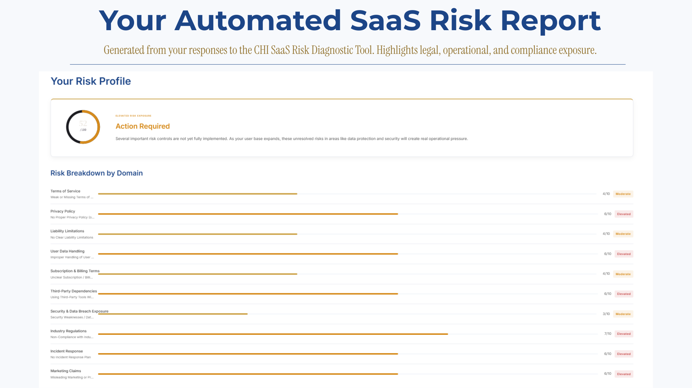

De-Risk Your SaaS Before Scale Makes It Expensive
I'm a litigation attorney turned software developer. I look at your Terms of Service, data handling, billing setup, security exposure, and compliance gaps, and I tell you exactly where your business is at risk before it costs you.
Built for the founder who'd rather find the risk than have it find them.
Growth Doesn't Break Businesses,
It Reveals Where They're Fragile
You built fast. That was the right call. But the shortcuts that got you to MVP are the same ones that will cost you when a VC does due diligence, or an enterprise client asks for your DPA.
As customer volume increases and investor scrutiny intensifies, hidden vulnerabilities evolve into legal exposure, operational disruption, and expensive architectural rework.
Risk is inevitable in scaling systems. Leaving it unmanaged is a choice.
Structured Risk Intelligence for Sustainable Growth
I don't look at your business in pieces. I look at how your legal documents, your data handling, your billing setup, and your security practices fit together, because most of the time, the real risk isn't in one place. It's in the gaps between them.
I'm not handing you a generic checklist. I map out where the real risks sit, how serious each one actually is, and what needs to happen first.
What you walk away with is a clear picture of where the risks are, how serious they actually are, and what to fix first. So when a VC starts asking questions or an enterprise client wants to see your DPA, you're not scrambling, you already know where you stand.
CHI SaaS Risk Diagnostic
Most SaaS founders I talk to aren't reckless. They just built fast and didn't know what to look for. The problem is those gaps don't stay hidden forever.
The CHI SaaS Risk Diagnostic walks you through 50 questions across 10 risk areas — your legal documents, data handling, billing setup, security practices, and more. At the end you get a personalised risk score and a PDF report telling you exactly what needs attention.
- Identify hidden legal and operational exposure
- Evaluate your SaaS across critical risk domains
- Understand where scaling may amplify vulnerabilities
Who This Diagnostic Is For
- Early-stage SaaS founders preparing to launch
- Indie hackers building their first SaaS product
- Developers turning side projects into real products
- Founders who want to identify legal or operational blind spots
What You Receive
- Personalized SaaS Risk Score
- Identification of key legal, operational, and compliance risks
- Breakdown of vulnerable areas in your platform
- Guidance on where to focus first to reduce exposure
Your report is generated instantly once the diagnostic is complete.
Example SaaS Risk Report
After completing the diagnostic, the system generates a structured SaaS risk report highlighting vulnerabilities across key operational and compliance areas.

Example excerpt from the automated SaaS Risk Diagnostic report.
Instant automated report • $29
No fluff. No sales call required. Just clarity.
Our Services
Risk Clarity Session
You've run the diagnostic. Now let's look at it together.
This is a 45-minute one-on-one call. I'll go through your diagnostic results with you, explain what the risk scores actually mean, and tell you what to focus on first. If you're an indie hacker or early-stage founder who needs expert eyes on your results without committing to a full assessment, this is where to start.
Who This Is For
- Founders who've completed the CHI SaaS Risk Diagnostic and want expert guidance on their results
- Indie hackers who need clarity without committing to a full assessment
- Anyone who wants to understand their risk profile before deciding what to do next
What's Included
- 45-minute one-on-one call to walk through your diagnostic results
- Prioritisation of your top 3 risk areas
- Direct answers to your specific questions
- Written follow-up summary of what to address first
Investment
$149 — Fixed fee
Tier 1 — Foundation Assessment
Protect your business before risk impacts your operations.
Who This Is For
- Small SaaS businesses or early-stage startups
- Businesses at MVP stage
- Companies wanting to lay a solid system foundation
Scope of Assessment
- Review of key documents (ToS, Privacy Policy, DPA, EULA)
- Client Intake and Snapshot
- Risk Register — full baseline assessment
- Risk Scoring & Priority Level
- Executive Summary & Action Plan
- 30-60-90 Day Recommendations
How It Works
- Discovery call and intake
- Document and system analysis
- Risk scoring and prioritization
- Comprehensive report and recommendations
Timeline
7-10 days from commencement
Investment
$850 — Fixed fee
Contact me to get started.
Tier 2 — Scale-Ready Audit
Gain clarity on your system's resilience as your business scales.
Who This Is For
- Growing SaaS companies preparing for scale
- Startups onboarding larger clients
- Founders preparing for funding rounds
- Companies expanding into new markets
Scope of Assessment
- System & Architecture Review
- Data Flow & Governance Mapping
- Compliance Exposure Identification
- Operational Process Review
- Risk Intelligence & Deliverables
How It Works
- Initial intake and scoping call
- Document & system evaluation
- Risk scoring and heat mapping
- Strategic debrief session
Timeline
2–3 weeks from commencement, depending on complexity
Investment
Custom pricing based on company size and scope. Contact me for a proposal.
Tier 3 — Investor-Ready Deep Dive
Executive-level assessment of complex or investor-ready systems.
Who This Is For
- Scaling SaaS companies preparing for funding
- Companies entering enterprise markets
- Multi-product or multi-system businesses
- Founders preparing for due diligence
Scope of Assessment
- Multi-System & Infrastructure Analysis
- Security & Control Review
- Operational & Workflow Vulnerability Assessment
- Risk Intelligence & Strategic Output
How It Works
- Initial scoping discussion
- Full systems evaluation and analysis
- Risk prioritization and executive summary
- Two strategic advisory sessions
Timeline
3–4 weeks depending on system complexity
Investment
Custom pricing based on company size and scope. Contact me for a proposal.
Strategic Advantage

Most risk consultants come from either law or tech. Johandria Heyman comes from both — a former litigation attorney who retrained as a software developer. That cross-domain lens is exactly what finds the vulnerabilities a pure technologist or a pure lawyer would miss.
That combination matters. A pure lawyer will spot the contract problem but miss the technical one. A pure developer will see the architecture risk but won't know what it means legally. I can see both, and I know which one is going to hurt you first.
My job is to make risk visible and manageable. Not overwhelming. Just clear.
The goal is straightforward: help you scale without unknowingly increasing your exposure.
Scale With Confidence
Every week you scale without a risk baseline is a week your exposure grows. Get clear visibility into your systems before complexity turns into a crisis.
Whether you're pre-launch or already scaling, I'll show you exactly what's there so you can make smart decisions instead of finding out the hard way.
If you'd like help addressing the risks identified in your report, book a Clarity Session or reach out to discuss a full assessment.
Get in Touch
If you're unsure about your current risk exposure or preparing for growth, reach out. I'd love to talk.
Initial consultations are focused, practical, and designed to give you clarity, not unnecessary complexity.